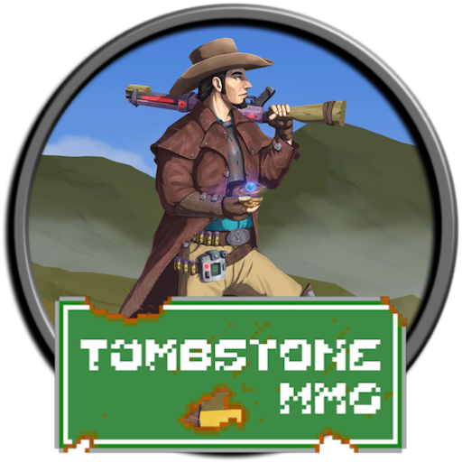
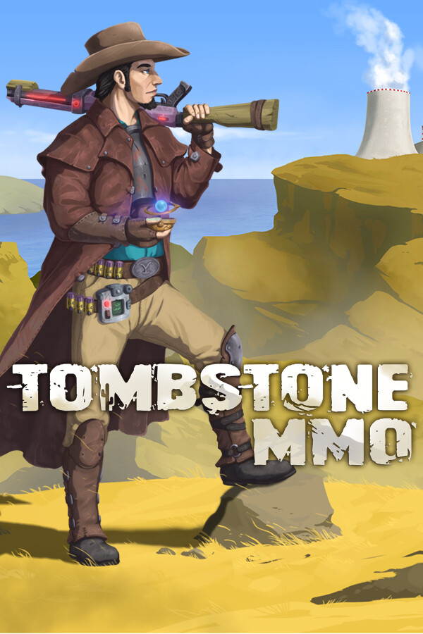

 Tombstone MMO
Details
|  | |
| Playtime | Not Played |
| Last Activity | Never |
| Added | 5/06/2025 3:25:11 |
| Modified | 7/06/2025 19:15:48 |
| Completion Status | Not Played |
| Library | Steam |
| Source | Steam |
| Platform | PC (Windows) |
| Release Date | |
| Community Score | |
| Critic Score | |
| User Score | |
| Genre | Free To Play Indie Massively Multiplayer RPG |
| Developer | |
| Publisher | |
| Feature | Achievements In-App Purchases MMO Multi-Player |
| Links | Community Hub Discussions Guides News Store Page PCGamingWiki Achievements |
| Tag | Character Customization Choices Matter Crafting Dystopian Exploration Futuristic Indie Massively Multiplayer MMORPG Multiplayer Open World Pixel Graphics Post-apocalyptic RPG Sandbox Science Sci-fi Survival Top-Down Western |
Description
[EARLY ACCESS]

Tombstone MMO is not your typical MMORPG. Quests are scarce, your choices leave a meaningful impact on your character and the world around you, and you can navigate the game at your own discretion.
With 20+ skills to train and several ways to progress, the game essentially adapts to your playstyle, whether you want to brute force it or cleverly get around things. If the main story doesn't interest you, you may carve your own path throughout the game.
Whether it's to relax and do some life skills to build your bank or fight the toughest mutants and technomantic creatures for rare items and glory.

Train 20+ different skills
Several combat choices (melee, ranged, or energy weapons)
Many gathering skills to harvest more and more items
Many creation skills to use your harvested (or purchased items) to make rarer, more powerful and useful items

Four different apocalyptic biomes to explore
Two islands:
Tutorial island that showcases everything to come, from using most of the skills to progress, to making game-changing decisions, to discovering hidden island secrets for more power.
A main island that is much larger, full of more skilling content, monsters to fight and loot, more secrets, and more NPCs to discuss the world with.

Make difficult decisions: Some decisions are semi-permanent and will affect how you play the game. Whether you do what's right or wrong, you set in stone your destiny in the lore and the gameplay loop.
Player interaction such as trading, marketing, partying up, ganging up, and PVP
NPC interactions such as buying, selling, Robbery, and charismatic conversations